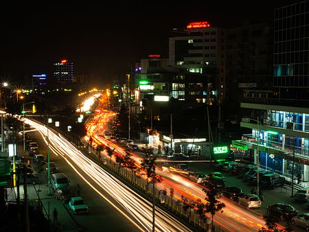
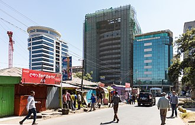
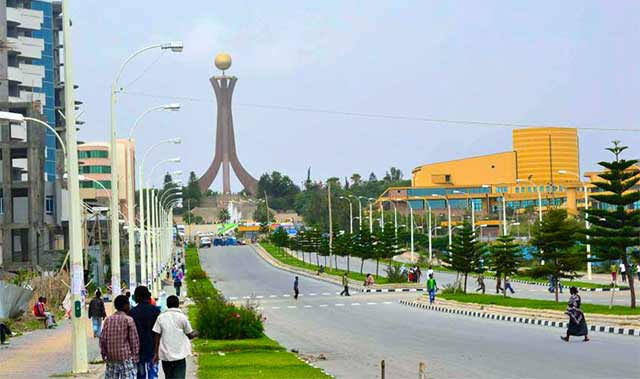
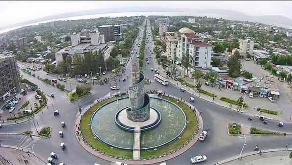
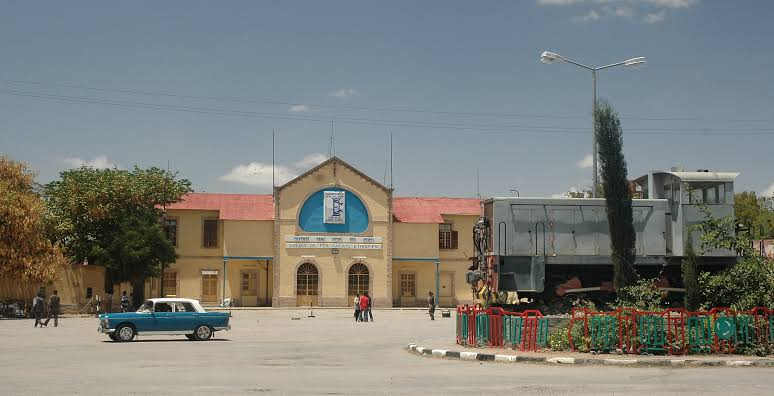

Addis Ababa
Addis Ababa (Amharic: አዲስ አበባ, Addis Abäba IPA: [adˈdis ˈabəba], "new flower"; or Addis Abeba (the spelling used by the official Ethiopian Mapping Authority); Oromo: Finfinne "natural spring") is the capital and largest city of Ethiopia. It is the seat of the Ethiopian federal government. According to the 2007 population census, the city has a total population of 2,739,551 inhabitants.
Read more about sheger

Mekele
Mekelle (Tigrinya: መቐለ, mäqälle), or Mekele formerly the capital of Enderta awraja in Tigray, is today the capital city of Tigray National Regional state.It is located around 780 kilometres (480 mi) north of the Ethiopian capital Addis Ababa, with an elevation of 2,254 metres (7,395 ft) above sea level. Administratively, Mekelle is considered a Special Zone, which is divided into seven sub-cities. Mekelle is the economic, cultural, and political hub of northern Ethiopia.
more about mekelle

Hawassa
Awasa was capital of the former Sidamo Province from about 1978 until the province was abolished with the adoption of the 1995 Constitution. This city is home to Hawassa University (which includes an Agricultural College, a Main Campus and a Health Sciences College), Awasa Adventist College, and a major market. The city is served by Awasa Airport (ICAO code HALA, IATA AWA), opened in 1988. Postal service is provided by a main branch; electricity and telephone service are also available.[1] Important local attractions include the St. Gabriel Church and the Awassa Kenema Stadium. Fishing is a major local industry.read more about hawassa

Dire Dawa
Dire Dawa (Amharic: ድሬ ዳዋ, Oromo: Dirre Dhawaa, lit. "Place of Remedy",[5] Somali: Dir Dhaba, meaning "where Dir hit his spear into the ground" or "The true Dir", Arabic: ديري داوا[6][7]) is one of two chartered cities (astedader akabibi) in Ethiopia (the other being the capital, Addis Ababa). It is divided administratively into two woredas, the city proper and the non-urban woreda of Gurgura
more about Dire